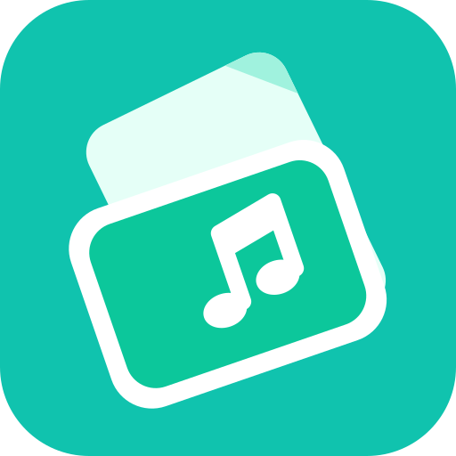

NCM / FLAC → MP3 · 歌词随歌曲保存
支持批量转换。原文件保留，歌词一起走。
支持的浏览器可记住你授权的目录；下次使用时，可能需要重新确认权限。
“添加文件”和“添加文件夹”优先从这里打开。
选定后，转换完成会直接写入此目录；重名自动编号。
在浏览器菜单中选择“安装应用”或“添加到主屏幕”。桌面 Chrome / Edge 通常也会在地址栏提供安装按钮。
安装后，先点击“准备离线转码”。显示“离线转码已就绪”后，即可断网转换。